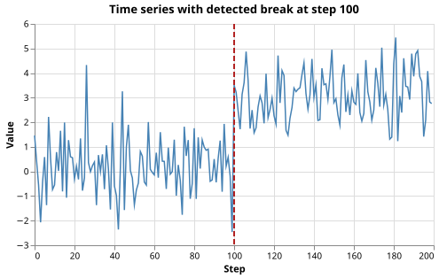
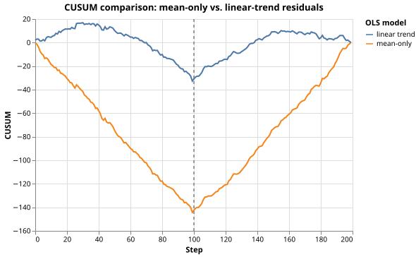

Structural Break Detection in Economic Time Series
The Problem
- An economic indicator like inflation can shift abruptly when policy changes or a crisis hits
- A structural break is a point in time where the statistical properties of the series change permanently
- Failing to account for a break leads to biased forecasts and spurious inference
- A model fitted over a period that straddles a break conflates two different regimes
- Our approach:
- Generate a synthetic time series with a known break at a known step
- Subtract the sample mean from each observation to get residuals, then compute the cumulative sum statistic (CUSUM) of those residuals
- Detect the break as the location of the largest absolute CUSUM value
Why does a structural break cause the CUSUM of OLS residuals to deviate from zero?
- The OLS residuals are always zero after fitting.
- Wrong: OLS minimises the sum of squared residuals, but residuals are generally non-zero for individual observations.
- Residuals on one side of the break have a consistent sign, so their cumulative sum
- drifts systematically rather than fluctuating around zero.
- Correct: the OLS fit uses a single set of parameters for the whole series; where the true mean differs from the fitted mean, residuals are biased in one direction.
- The CUSUM is defined as the sum of squared residuals, which grows with the break size.
- Wrong: CUSUM is the cumulative sum of residuals (not squared), so it can go negative as well as positive.
- A break always makes the residuals larger in absolute value, raising the CUSUM.
- Wrong: absolute size alone does not cause drift; it is the consistent sign that produces the characteristic V-shape.
The CUSUM Statistic
- Given a time series $y_0, \ldots, y_{T-1}$ and a fitted model with residuals $\hat{e}_t = y_t - \hat{y}_t$, the cumulative sum (CUSUM) at step $t$ is:
$$C_t = \sum_{s=0}^{t} \hat{e}_s$$
- Before a break, residuals share one systematic sign (i.e., the global fit is wrong in one direction)
- After the break they flip, so $C_t$ first drifts away from zero and then turns back
- The break is detected at the index of maximum absolute deviation:
$$\hat{\tau} = \mathop{\arg\max}_{t} |C_t|$$
- Because detect_break returns the last index before the estimated break, the estimated break location in terms of steps is $\hat{\tau} + 1$
Generating Synthetic Data
- The series has a single abrupt break at step 100: the mean shifts from 0.0 to 3.0, a change of three standard deviations ($\sigma = 1.0$)
- This signal-to-noise ratio of 3 gives reliable detection with 200 observations while still leaving visible scatter in the plots
def make_breakpoint_data(
n_steps=N_STEPS,
break_step=BREAK_STEP,
mean_before=MEAN_BEFORE,
mean_after=MEAN_AFTER,
noise_std=NOISE_STD,
seed=SEED,
):
"""Return a Polars DataFrame with columns 'step' and 'value'.
The series has a single structural break at break_step:
- value[t] ~ N(mean_before, noise_std^2) for t < break_step
- value[t] ~ N(mean_after, noise_std^2) for t >= break_step
The break is abrupt: there is no gradual transition.
"""
rng = np.random.default_rng(seed)
steps = np.arange(n_steps)
means = np.where(steps < break_step, mean_before, mean_after)
values = means + rng.normal(0.0, noise_std, n_steps)
return pl.DataFrame({"step": steps, "value": values})
Mean-Only Residuals and CUSUM
- Subtract the sample mean from each observation: $\hat{e}_t = y_t - \bar{y}$
- If there is no break, these residuals fluctuate randomly around zero with no consistent pattern
- If there is a break,
residuals before the break have one consistent sign
and residuals after have the opposite sign
- The global mean sits between the two local means, so it over-estimates one half and under-estimates the other
- This sign reversal produces the characteristic V-shape in $C_t$
- The CUSUM drifts in one direction before the break and reverses after
- The peak marks the break
def cusum(residuals):
"""Cumulative sum (CUSUM) of residuals.
C_t = sum_{s=0}^{t} e_s (0-indexed).
A structural break shifts the expected sign of residuals, so C_t drifts
away from zero before the break and then reverses afterwards. The index
of maximum |C_t| estimates the location of the break.
"""
return np.cumsum(residuals)
def detect_break(cusum_values):
"""Return the index where |CUSUM| is largest.
This index is the last step before the detected break: the series
properties are estimated to shift at index detect_break(...) + 1.
"""
return int(np.argmax(np.abs(cusum_values)))
Linear-Trend Residuals and CUSUM
- If the series also has a linear trend,
subtracting only the mean conflates the trend with the break
- The CUSUM responds to both
- Instead, subtract the line of best fit found by
np.polyfitwith $\hat{e}_t = y_t - (a + bt)$, where $a$ and $b$ are chosen to minimise the sum of squared differences from the data - The CUSUM of these trend residuals responds only to departures from the fitted line, such as a sudden mean shift
- A break that also changes the trend is harder to see in mean residuals but visible in trend residuals
- When the series has no trend (as in the synthetic data here) both models should detect the same break (which they do)
- When a trend is present the linear-trend approach is the appropriate choice
- Applying the mean-only approach to a trending series produces a spurious signal at the point where the trend, not a break, drives the largest cumulative deviation
A time series has GDP values that grow at roughly 2% per year with no sudden shift. Which CUSUM model is more appropriate?
- Mean-only, because GDP is always measured as a level.
- Wrong: a mean-only model applied to a trending series will produce a large CUSUM signal driven by the trend, not any break.
- Linear-trend, because removing the trend first isolates departures from the trend.
- Correct: the OLS detrending step removes the 2% annual growth so the CUSUM responds only to unexpected deviations.
- Neither; CUSUM requires a stationary series before any fitting.
- Wrong: CUSUM can be applied after any OLS fit; the choice of fit determines what kind of departure the CUSUM detects.
- Mean-only, but only if the trend is very small.
- Wrong: even a modest trend, cumulated over many steps, will dominate the CUSUM and make break detection unreliable.
Plotting
def plot_series_with_break(values, detected_break, filename):
"""Save a time-series plot with a vertical rule at the detected break."""
n = len(values)
df = pl.DataFrame({"step": np.arange(n, dtype=float), "value": values})
series = (
alt.Chart(df)
.mark_line(color="steelblue", strokeWidth=1.5)
.encode(
x=alt.X("step:Q", title="Step"),
y=alt.Y("value:Q", title="Value"),
)
)
break_df = pl.DataFrame({"step": [float(detected_break + 1)]})
break_rule = (
alt.Chart(break_df)
.mark_rule(color="firebrick", strokeWidth=2, strokeDash=[6, 3])
.encode(x="step:Q")
)
chart = alt.layer(series, break_rule).properties(
width=450,
height=250,
title=f"Time series with detected break at step {detected_break + 1}",
)
chart.save(filename)
def plot_cusum_comparison(cusum_mean, cusum_trend, true_break, filename):
"""Save CUSUM trajectories for both OLS models on the same axes."""
n = len(cusum_mean)
steps = np.arange(n, dtype=float)
df = pl.DataFrame(
{
"step": np.concatenate([steps, steps]),
"cusum": np.concatenate([cusum_mean, cusum_trend]),
"model": ["mean-only"] * n + ["linear trend"] * n,
}
)
lines = (
alt.Chart(df)
.mark_line(strokeWidth=2)
.encode(
x=alt.X("step:Q", title="Step"),
y=alt.Y("cusum:Q", title="CUSUM"),
color=alt.Color("model:N", legend=alt.Legend(title="OLS model")),
)
)
break_df = pl.DataFrame({"step": [float(true_break)]})
break_rule = (
alt.Chart(break_df)
.mark_rule(color="gray", strokeDash=[4, 4], strokeWidth=1.5)
.encode(x="step:Q")
)
chart = alt.layer(lines, break_rule).properties(
width=450,
height=300,
title="CUSUM comparison: mean-only vs. linear-trend residuals",
)
chart.save(filename)


Testing
- CUSUM of zero residuals
- If all residuals are zero the CUSUM is identically zero. This confirms the function is a pure cumulative sum with no hidden offset.
- CUSUM matches
np.cumsum - CUSUM is defined as the cumulative sum of residuals,
so it must match
np.cumsumon the same array exactly. Any discrepancy would indicate an indexing bug. - Residuals sum to zero
- For both the mean-only and linear-trend fits, residuals must sum to zero.
Subtracting the sample mean centers the data exactly;
np.polyfitwith an intercept term also centers the residuals. A failure would indicate an error in the subtraction or fitting step. - Clean-signal break detection
- With no noise,
a 0-to-3 step function has residuals of $-1.5$ before the break and $+1.5$ after.
The CUSUM decreases at rate 1.5 for 100 steps (reaching $-150$),
then increases at rate 1.5 for 100 steps (returning to 0).
The maximum absolute value is at index 99, so
detect_breakmust return 99. - Noisy detection within ten steps
- With seed 7493418 and signal-to-noise ratio 3, the estimated break location ($\hat{\tau} + 1$) must be within 10 steps of the true break at step 100. The tolerance of 10 is roughly $3\sigma / \sqrt{n} \approx 0.07$ of the series length, which is a generous margin given the high signal-to-noise ratio (SNR).
import numpy as np
import pytest
from generate_breakpoint import make_breakpoint_data, BREAK_STEP, N_STEPS
from breakpoint import residuals_mean, residuals_trend, cusum, detect_break
def test_cusum_all_zero_residuals():
# The CUSUM of a zero-residual sequence is identically zero.
assert np.all(cusum(np.zeros(50)) == 0.0)
def test_cusum_matches_cumsum():
# By definition CUSUM must equal numpy's cumsum on the same array.
residuals = np.array([1.0, -2.0, 3.0, -0.5, 0.5])
np.testing.assert_array_equal(cusum(residuals), np.cumsum(residuals))
def test_mean_residuals_sum_to_zero():
# OLS residuals from a mean-only fit sum to zero because the least-squares
# intercept equals the sample mean, centering the residuals exactly.
df = make_breakpoint_data()
values = df["value"].to_numpy()
assert np.sum(residuals_mean(values)) == pytest.approx(0.0, abs=1e-10)
def test_trend_residuals_sum_to_zero():
# OLS with an intercept always centers the residuals, so they also sum to
# zero for the linear-trend fit.
df = make_breakpoint_data()
values = df["value"].to_numpy()
assert np.sum(residuals_trend(values)) == pytest.approx(0.0, abs=1e-10)
def test_detect_break_clean_signal():
# With no noise the CUSUM of mean-only residuals reaches its maximum
# absolute value at index BREAK_STEP - 1 (the last step before the break),
# because the cumulative deficit reaches its deepest point exactly there.
values = np.concatenate(
[
np.zeros(BREAK_STEP),
3.0 * np.ones(N_STEPS - BREAK_STEP),
]
)
detected = detect_break(cusum(residuals_mean(values)))
assert detected == BREAK_STEP - 1
def test_detect_break_noisy_within_ten_steps():
# With seed 7493418 and a signal-to-noise ratio of 3 (mean shift 3.0,
# noise std 1.0), the detected break must be within 10 steps of the
# true break. detect_break returns the last index before the break,
# so the estimated break location is detected + 1.
df = make_breakpoint_data()
values = df["value"].to_numpy()
detected = detect_break(cusum(residuals_mean(values)))
assert abs((detected + 1) - BREAK_STEP) <= 10
Structural break detection key terms
- Structural break
- A point in time at which the statistical properties of a time series (mean, variance, trend) change abruptly and permanently; also called a regime change or change point
- CUSUM statistic $C_t$
- $\sum_{s=0}^{t} \hat{e}_s$; cumulative sum of residuals; drifts systematically when the fitted model is wrong on one side of a break
- Mean-only residuals
- $\hat{e}_t = y_t - \bar{y}$; appropriate when the series is stationary around a constant mean; confounds trend and break if a trend is present
- Linear-trend residuals
- $\hat{e}_t = y_t - (a + bt)$ where $a$ and $b$ are found by
np.polyfit; removes a fitted linear drift before forming the CUSUM; appropriate when the series has a deterministic trend - Break detection rule
- $\hat{\tau} = \arg\max_t |C_t|$; the last index before the estimated break; the estimated break location is $\hat{\tau} + 1$
Exercises
Do the math
A noise-free series has value 0 for steps 0-99 and value 3 for steps 100-199. The global mean is 1.5. At which step index (0-based) does $|C_t|$ reach its maximum?
Two break points
Modify make_breakpoint_data to introduce a second break: the mean shifts from 0.0
to 3.0 at step 60 and then from 3.0 to 1.0 at step 140.
Plot the CUSUM of the mean-only residuals and explain why the statistic now shows
two local extrema.
Does detect_break find the larger or smaller break?
Effect of signal-to-noise ratio
Run the detection algorithm for five signal-to-noise ratios ($\Delta\mu / \sigma = $ 0.5, 1, 2, 3, 5) while keeping all other parameters fixed. For each ratio, report the detected break location and its distance from the true break. At what SNR does reliable detection (within 5 steps) become consistent across different random seeds?
Trend with a break
Generate a series with a linear trend ($b = 0.05$ per step) and a mean break at step 100. Apply both the mean-only and linear-trend CUSUM and compare the detected break locations. Show that the mean-only CUSUM gives a biased estimate when a trend is present.
Scaled CUSUM and critical values
The raw CUSUM is not scale-invariant: a larger noise standard deviation produces larger CUSUM values even with no break. Normalise the CUSUM by dividing by $\hat{\sigma}\sqrt{T}$ where $\hat{\sigma}$ is the residual standard error and $T$ is the series length. The scaled statistic exceeds 1.36 with probability 5% under the null hypothesis of no break (Brown-Durbin-Evans critical value). Apply this threshold to the synthetic data and report whether the break is detected at the 5% level.